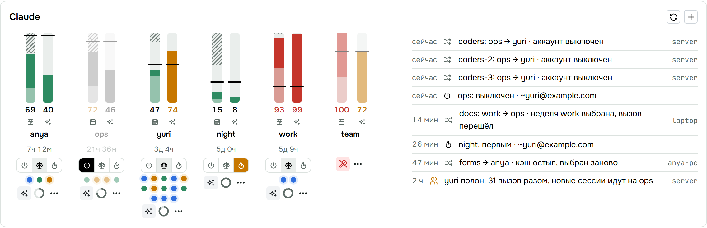
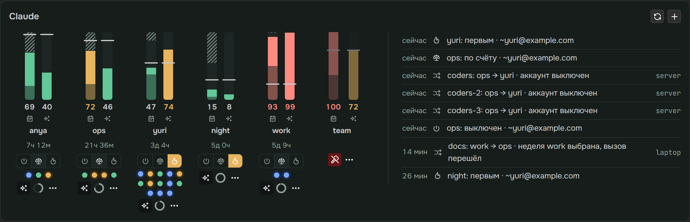
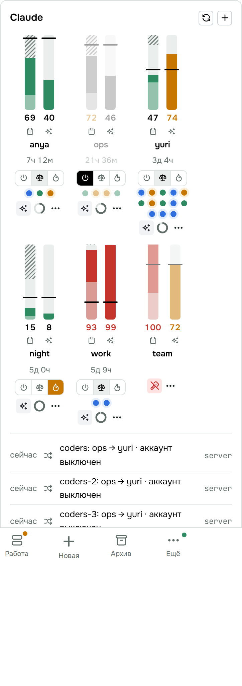
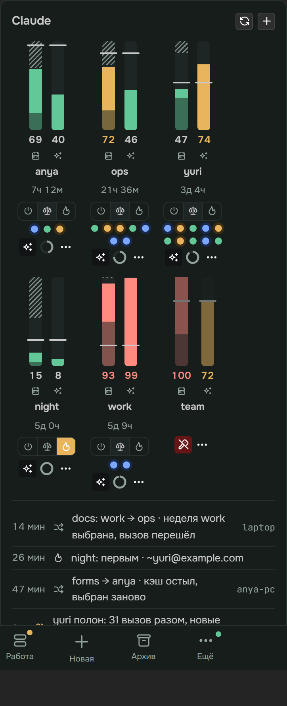

<title>Рычаг аккаунта</title>
<meta name="claude:viewport-fit-sides" content="cover">
<link rel="stylesheet" href="https://fonts.googleapis.com/css2?family=Inter:wght@400;500;600&family=Space+Grotesk:wght@500;600&family=JetBrains+Mono:wght@400;500&display=swap">
<style>
/* раскладка: сверху выбор аккаунта целиком с живыми рычагами; ниже — путь поворота по частям флота, «выключен» по времени, «первым» по видам сессий с замером прода, экран, эталоны картинками, развилки, гейт, порядок */
:root {
  --bg: #f6f5f1; --card: #ffffff; --fg: #1c211f; --muted: #66706b; --line: #d9d8d0; --soft: #eceae3;
  --accent: #1f7a63; --accent-soft: #dcefe8; --new: #b8590f; --new-soft: #fbe9d7; --code: #f0eee7; --chg: #fff3b0;
  --busy: #2f6fde; --wait: #cf7a00; --idle: #2e8b63; --fail: #cf3a34; --wait-soft: #faeed8; --fail-soft: #f9e1df;
}
@media (prefers-color-scheme: dark) { :root:not([data-theme="light"]) {
  --bg: #151917; --card: #1d2320; --fg: #e8ece9; --muted: #98a39d; --line: #343c38; --soft: #252c28;
  --accent: #5fc3a6; --accent-soft: #1d3a31; --new: #f0a25c; --new-soft: #40291a; --code: #232a26; --chg: #4a4318;
  --busy: #6f9cf5; --wait: #f0b040; --idle: #58c493; --fail: #ef8a80; --wait-soft: #3a2c12; --fail-soft: #3f1c19; color-scheme: dark } }
:root[data-theme="dark"] {
  --bg: #151917; --card: #1d2320; --fg: #e8ece9; --muted: #98a39d; --line: #343c38; --soft: #252c28;
  --accent: #5fc3a6; --accent-soft: #1d3a31; --new: #f0a25c; --new-soft: #40291a; --code: #232a26; --chg: #4a4318;
  --busy: #6f9cf5; --wait: #f0b040; --idle: #58c493; --fail: #ef8a80; --wait-soft: #3a2c12; --fail-soft: #3f1c19; color-scheme: dark }
body { background: var(--bg); color: var(--fg); font: 15px/1.5 Inter, system-ui, sans-serif; padding-left: max(16px, env(safe-area-inset-left, 0px)); padding-right: max(16px, env(safe-area-inset-right, 0px)); padding-block: 28px 64px; }
main { max-width: 1040px; margin: 0 auto; display: flex; flex-direction: column; gap: 36px; }
h1, h2 { font-family: "Space Grotesk", Inter, sans-serif; text-wrap: balance; margin: 0; }
h1 { font-size: 34px; line-height: 1.1; }
h2 { font-size: 21px; }
.lead { color: var(--muted); max-width: 66ch; margin: 8px 0 0; }
.lead a { color: var(--accent); }
section { display: flex; flex-direction: column; gap: 14px; border-radius: 14px; }
section.read > h2::after { content: " ✓ прочитал"; font: 500 12px Inter, sans-serif; color: var(--accent); }
.card { background: var(--card); border: 1px solid var(--line); border-radius: 14px; padding: 16px; min-width: 0; }
.chg { background: var(--chg); border-radius: 4px; }
.card.chg { border-radius: 14px; }
.say { border-left: 3px solid var(--accent); background: var(--soft); border-radius: 0 10px 10px 0; padding: 10px 14px; min-height: 44px; }
.say b { font-weight: 600; }
.say pre { margin: 8px 0 0; }
pre { font: 12.5px/1.45 "JetBrains Mono", ui-monospace, monospace; background: var(--code); border-radius: 8px; padding: 10px 12px; overflow-x: auto; margin: 0; }
code { font: 12.5px "JetBrains Mono", ui-monospace, monospace; background: var(--code); border-radius: 4px; padding: 1px 5px; }

/* диаграммы */
.dia { overflow-x: auto; }
.dia svg { display: block; min-width: 760px; width: 100%; height: auto; }
svg text { font: 500 13px Inter, sans-serif; fill: var(--fg); }
svg text.s { font-size: 11.5px; fill: var(--muted); font-weight: 400; }
svg text.b { font-weight: 600; }
svg text.num { font-size: 12px; font-weight: 600; font-variant-numeric: tabular-nums; }
svg text.bad { fill: var(--fail); }
.n rect { fill: var(--card); stroke: var(--line); stroke-width: 1.5; }
.n.key rect { fill: var(--accent-soft); stroke: var(--accent); }
.n.pri rect { fill: var(--wait-soft); stroke: var(--wait); }
.n.old rect { fill: var(--soft); stroke: var(--muted); }
.n.fresh rect { fill: var(--accent-soft); stroke: var(--accent); }
.a path { stroke: var(--muted); stroke-width: 1.8; fill: none; }
.a path.hit { stroke: transparent; stroke-width: 18; }
.a.go path:not(.hit) { stroke: var(--accent); stroke-width: 2.4; }
.a.pri path:not(.hit) { stroke: var(--wait); }
.a.dash path:not(.hit) { stroke-dasharray: 5 5; }
.head { fill: var(--muted); }
.head.go { fill: var(--accent); }
.head.pri { fill: var(--wait); }
[data-i], [data-lever], [data-model], [data-acc], [data-sim="session"], [data-sim="arrow"] { cursor: pointer; }
#sim [data-sim="session"]:hover > rect, #sim [data-sim="session"].on > rect { stroke-width: 2.8; }
#sim [data-sim="arrow"]:hover path:not(.hit), #sim [data-sim="arrow"].on path:not(.hit) { stroke-width: 3.6; }
#sim [data-acc]:focus-visible, #sim [data-sim]:focus-visible { outline: 2px solid var(--accent); outline-offset: 2px; }
svg [data-i]:hover rect, svg [data-i].on rect { stroke-width: 2.8; }
svg [data-i]:hover path:not(.hit), svg [data-i].on path:not(.hit) { stroke-width: 3.2; }
svg [data-i]:focus-visible, svg [data-lever]:focus-visible, svg [data-model]:focus-visible { outline: 2px solid var(--accent); outline-offset: 2px; }
.mark line { stroke: var(--fg); stroke-width: 1.5; stroke-dasharray: 3 4; }
.dot { fill: var(--muted); }

/* столбики лимитов и рычаг — общие для выбора, эталонов и развилок */
.track { fill: var(--soft); }
.fill.idle { fill: var(--idle); } .fill.wait { fill: var(--wait); } .fill.fail { fill: var(--fail); }
.share { opacity: 0.45; }
.hatch line { stroke: var(--muted); stroke-width: 1.2; }
.acc.off .bars, .acc.off .meta { opacity: 0.35; }
.acc .ring { fill: none; stroke: none; }
.acc.best .ring { stroke: var(--accent); stroke-width: 2; }
.acc:hover .ring, .acc.on .ring { stroke: var(--line); stroke-width: 2; }
.acc.best:hover .ring, .acc.best.on .ring { stroke: var(--accent); stroke-width: 3; }
.acc .hit { fill: transparent; }
.ic path { fill: none; stroke: currentColor; stroke-width: 2; stroke-linecap: round; stroke-linejoin: round; }
.lv rect { fill: var(--card); stroke: var(--line); stroke-width: 1.2; }
.lv { color: var(--muted); }
.lv:hover rect { stroke: var(--fg); }
.lv.on { color: var(--fg); }
.lv.on rect { fill: var(--soft); stroke: var(--muted); }
.lv-off.on { color: var(--card); }
.lv-off.on rect { fill: var(--fg); stroke: var(--fg); }
.lv-first.on { color: var(--card); }
.lv-first.on rect { fill: var(--wait); stroke: var(--wait); }
.pill rect { fill: var(--card); stroke: var(--line); stroke-width: 1.2; }
.pill.on rect { fill: var(--fg); stroke: var(--fg); }
.pill.on text { fill: var(--card); }
.chip rect { fill: var(--soft); stroke: var(--line); stroke-width: 1.2; }

/* замер прода: кому достались выборы */
.split { display: flex; flex-direction: column; gap: 10px; }
.split .row { display: grid; grid-template-columns: 150px minmax(0, 1fr); gap: 12px; align-items: center; }
.split .row > span { font-size: 13px; color: var(--muted); }
.split .bar { display: flex; height: 30px; border-radius: 7px; overflow: hidden; border: 1px solid var(--line); }
.split .bar i { display: flex; align-items: center; justify-content: center; min-width: 0; font: 600 12.5px Inter, sans-serif; font-style: normal; font-variant-numeric: tabular-nums; background: var(--soft); color: var(--fg); border-left: 1px solid var(--line); }
.split .bar i:first-child { border-left: 0; }
.split .bar i.pri { background: var(--wait); color: var(--card); }
.split .bar i.top { background: var(--accent-soft); }
.split small { color: var(--muted); font-size: 12.5px; }
@media (max-width: 560px) { .split .row { grid-template-columns: 1fr; gap: 4px; } }

/* снимок с нажимаемыми зонами: рамки стоят по настоящей разметке экрана */
.anat { position: relative; }
.anat img { display: block; width: 100%; border-radius: 8px; border: 1px solid var(--line); }
.hot { position: absolute; border: 2px solid var(--new); border-radius: 7px; background: none; padding: 0; cursor: pointer; opacity: 0.5; }
.hot:hover, .hot:focus-visible, .hot.on { opacity: 1; background: color-mix(in srgb, var(--new) 12%, transparent); outline: none; }
.grid { display: grid; grid-template-columns: repeat(auto-fit, minmax(210px, 1fr)); gap: 12px; }
.tile b { display: block; font: 600 26px "Space Grotesk", sans-serif; font-variant-numeric: tabular-nums; }
.tile span { color: var(--muted); font-size: 13px; }
.shots { display: grid; grid-template-columns: repeat(auto-fit, minmax(220px, 1fr)); gap: 16px; align-items: start; }
figure { margin: 0; min-width: 0; }
figure img { width: 100%; border: 1px solid var(--line); border-radius: 10px; display: block; }
figure.ph img { max-width: 300px; }
figure.wide { grid-column: 1 / -1; }
figcaption { font-size: 12.5px; color: var(--muted); margin-top: 6px; }

/* эталоны: что на входе → куда пошла сессия */
.ets { display: grid; grid-template-columns: repeat(auto-fit, minmax(300px, 1fr)); gap: 12px; }
.et { display: flex; flex-direction: column; gap: 8px; }
.et h3 { font: 600 14px/1.35 Inter, sans-serif; margin: 0; text-wrap: balance; }
.et svg { display: block; width: 100%; height: auto; }
.et small { color: var(--muted); font-size: 11.5px; }
.et[data-ok="false"] { border-color: var(--fail); }

/* развилки */
.fork { display: grid; grid-template-columns: repeat(auto-fit, minmax(280px, 1fr)); gap: 12px; }
.opt { background: var(--card); border: 1px solid var(--line); border-radius: 14px; padding: 14px 16px; display: flex; flex-direction: column; gap: 8px; min-width: 0; }
.opt.rec { border-color: var(--accent); box-shadow: inset 0 0 0 1px var(--accent); }
.opt b { font-weight: 600; }
.opt span { color: var(--muted); font-size: 13.5px; }
.opt svg { display: block; width: 100%; max-width: 300px; height: auto; }
.forks { display: flex; flex-direction: column; gap: 18px; }
.forks h3 { font: 600 15px Inter, sans-serif; margin: 0 0 8px; }

.gate { white-space: pre-wrap; font: 12.5px/1.6 "JetBrains Mono", ui-monospace, monospace; overflow-x: auto; }
.steps { margin: 0; padding: 0; list-style: none; counter-reset: st; display: flex; flex-direction: column; gap: 10px; }
.steps li { counter-increment: st; background: var(--card); border: 1px solid var(--line); border-radius: 12px; padding: 12px 14px 12px 46px; position: relative; }
.steps li::before { content: counter(st); position: absolute; left: 14px; top: 12px; width: 22px; height: 22px; border-radius: 50%; background: var(--accent-soft); color: var(--accent); font: 600 12.5px Inter, sans-serif; display: flex; align-items: center; justify-content: center; }
.steps .done { margin-top: 6px; color: var(--muted); font-size: 13.5px; }
.steps .done b { color: var(--accent); font-weight: 600; }
</style>

<main>
<header>
  <h1>Рычаг аккаунта</h1>
  <p class="lead">У каждого аккаунта Claude три положения: выключен, по счёту, первым. Рычаг один на аккаунт и действует на сессии любой модели — и на общий запас недели, и на запас Fable. Поверните рычаги на картинке; нажмите на аккаунт, узел или стрелку. Живой прототип на этом компьютере: <a href="http://localhost:4871/?mock#/fleet/accounts">Флот → Аккаунты</a>.</p>
</header>

<section id="b-lever" data-block>
  <h2>Три положения</h2>
  <div class="card dia"><svg id="sim" viewBox="0 0 880 392" role="group" aria-label="Выбор аккаунта для сессии: пять аккаунтов с рычагами"></svg></div>
  <div class="say" id="sim-say" aria-live="polite"></div>
</section>

<section id="b-path" data-block>
  <h2>Путь поворота</h2>
  <div class="card dia">
    <svg viewBox="0 0 880 290" role="group" aria-label="Путь поворота рычага по частям флота">
      <defs>
        <marker id="ah" viewBox="0 0 10 10" refX="9" refY="5" markerWidth="7" markerHeight="7" orient="auto-start-reverse"><path d="M0 0L10 5L0 10z" class="head"/></marker>
        <marker id="ah-go" viewBox="0 0 10 10" refX="9" refY="5" markerWidth="7" markerHeight="7" orient="auto-start-reverse"><path d="M0 0L10 5L0 10z" class="head go"/></marker>
        <marker id="ah-pri" viewBox="0 0 10 10" refX="9" refY="5" markerWidth="7" markerHeight="7" orient="auto-start-reverse"><path d="M0 0L10 5L0 10z" class="head pri"/></marker>
      </defs>
      <g class="a go" data-i="f-set"><path class="hit" d="M192 51L270 84"/><path d="M192 51L270 84" marker-end="url(#ah-go)"/></g>
      <g class="a go" data-i="f-tool"><path class="hit" d="M192 139L270 106"/><path d="M192 139L270 106" marker-end="url(#ah-go)"/></g>
      <g class="a go" data-i="f-changed"><path class="hit" d="M450 84L590 84"/><path d="M450 84L590 84" marker-end="url(#ah-go)"/><text class="s" x="520" y="76" text-anchor="middle">ключи изменились</text></g>
      <g class="a" data-i="f-list"><path class="hit" d="M590 108L450 108"/><path d="M590 108L450 108" marker-end="url(#ah)"/><text class="s" x="520" y="126" text-anchor="middle">аккаунты и рычаги</text></g>
      <g class="a" data-i="f-calls"><path class="hit" d="M760 95L800 95"/><path d="M760 95L800 95" marker-end="url(#ah)"/></g>
      <g class="a dash" data-i="f-use"><path class="hit" d="M360 124L480 214"/><path d="M360 124L480 214" marker-end="url(#ah)"/><text class="s" x="372" y="178" text-anchor="middle">кто повернул</text></g>
      <g class="a dash" data-i="f-route"><path class="hit" d="M675 124L600 214"/><path d="M675 124L600 214" marker-end="url(#ah)"/><text class="s" x="700" y="178" text-anchor="middle">выбор, переход</text></g>
      <g class="n" data-i="f-human"><rect x="16" y="24" width="176" height="54" rx="10"/><text x="104" y="47" text-anchor="middle">Человек</text><text class="s" x="104" y="65" text-anchor="middle">экран «Флот → Аккаунты»</text></g>
      <g class="n" data-i="f-agent"><rect x="16" y="112" width="176" height="54" rx="10"/><text x="104" y="135" text-anchor="middle">Агент</text><text class="s" x="104" y="153" text-anchor="middle">инструмент флота</text></g>
      <g class="n key" data-i="f-keys"><rect x="270" y="66" width="180" height="58" rx="10"/><text x="360" y="91" text-anchor="middle">Служба ключей</text><text class="s" x="360" y="109" text-anchor="middle">хранит положение рычага</text></g>
      <g class="n" data-i="f-hosts"><rect x="590" y="66" width="170" height="58" rx="10"/><text x="675" y="91" text-anchor="middle">Машины флота</text><text class="s" x="675" y="109" text-anchor="middle">выбирают аккаунт сессии</text></g>
      <g class="n" data-i="f-claude"><rect x="800" y="66" width="68" height="58" rx="10"/><text x="834" y="100" text-anchor="middle">Claude</text></g>
      <g class="n" data-i="f-history"><rect x="440" y="214" width="200" height="54" rx="10"/><text x="540" y="237" text-anchor="middle">История флота</text><text class="s" x="540" y="255" text-anchor="middle">все строки журналов</text></g>
    </svg>
  </div>
  <div class="say" aria-live="polite"><b>Служба ключей.</b> Хранит токены аккаунтов и положение рычага — в одном месте на весь флот. Новых запросов и кадров нет: рычаг едет тем же путём, каким уже едет флаг запаса Fable.</div>
</section>

<section id="b-off" data-block>
  <h2>Выключен</h2>
  <div class="card dia">
    <svg viewBox="0 0 880 232" role="group" aria-label="Что происходит с сессиями аккаунта после выключения">
      <text class="s" x="14" y="68">занятая сессия</text>
      <text class="s" x="14" y="128">спящая сессия</text>
      <text class="s" x="14" y="188">проверки лимитов, каталог</text>
      <g class="n old" data-i="o-flying"><rect x="210" y="50" width="230" height="28" rx="7"/><text x="325" y="69" text-anchor="middle">вызов · ops</text></g>
      <g class="n fresh" data-i="o-next"><rect x="470" y="50" width="230" height="28" rx="7"/><text x="585" y="69" text-anchor="middle">вызов · yuri — кэш заново</text></g>
      <g class="a dash" data-i="o-sleep"><path class="hit" d="M210 124L600 124"/><path d="M210 124L600 124"/><text class="s" x="300" y="116" text-anchor="middle">привязана к ops</text></g>
      <g class="n fresh" data-i="o-wake"><rect x="600" y="110" width="200" height="28" rx="7"/><text x="700" y="129" text-anchor="middle">вызов · yuri</text></g>
      <g data-i="o-probe"><rect x="210" y="168" width="130" height="30" fill="transparent"/><circle class="dot" cx="240" cy="184" r="5"/><circle class="dot" cx="320" cy="184" r="5"/><text class="s" x="430" y="188">вызовов 0</text></g>
      <g class="n" data-i="o-token"><rect x="640" y="170" width="160" height="28" rx="7"/><text class="s" x="720" y="189" text-anchor="middle">токен остаётся</text></g>
      <g class="mark" data-i="o-turn"><rect x="368" y="6" width="64" height="26" rx="7" style="fill: var(--fg)"/><g class="ic" style="color: var(--card)" transform="translate(393 12) scale(0.58)"><path d="M7 6a7.75 7.75 0 1 0 10 0"/><path d="M12 4l0 8"/></g><line x1="400" y1="32" x2="400" y2="214"/></g>
    </svg>
  </div>
  <div class="say" aria-live="polite"><b>Рычаг — «выключен».</b> С этой секунды флот не делает аккаунтом ни одного нового вызова. Идущий ответ доходит, следующий вызов сессии уходит на другой аккаунт.</div>
</section>

<section id="b-first" data-block>
  <h2>Первым</h2>
  <div class="card dia">
    <svg viewBox="0 0 880 262" role="group" aria-label="Какие сессии идут на аккаунт «первым»">
      <g class="a pri" data-i="p-a1"><path class="hit" d="M210 40C280 40 290 84 350 88"/><path d="M210 40C280 40 290 84 350 88" marker-end="url(#ah-pri)"/></g>
      <g class="a pri" data-i="p-a2"><path class="hit" d="M210 96L350 96"/><path d="M210 96L350 96" marker-end="url(#ah-pri)"/></g>
      <g class="a pri" data-i="p-a3"><path class="hit" d="M210 152C280 152 290 108 350 104"/><path d="M210 152C280 152 290 108 350 104" marker-end="url(#ah-pri)"/></g>
      <g class="a" data-i="p-a4"><path class="hit" d="M540 96L670 96"/><path d="M540 96L670 96" marker-end="url(#ah)"/><text class="s" x="605" y="88" text-anchor="middle">закрыт или полон</text></g>
      <g class="a dash" data-i="p-a5"><path class="hit" d="M210 224L350 224"/><path d="M210 224L350 224" marker-end="url(#ah)"/></g>
      <g class="n" data-i="p-new"><rect x="20" y="20" width="190" height="40" rx="10"/><text x="115" y="45" text-anchor="middle">новая</text></g>
      <g class="n" data-i="p-cold"><rect x="20" y="76" width="190" height="40" rx="10"/><text x="115" y="101" text-anchor="middle">остывшая</text></g>
      <g class="n" data-i="p-limit"><rect x="20" y="132" width="190" height="40" rx="10"/><text x="115" y="157" text-anchor="middle">упёрлась в лимит</text></g>
      <g class="n" data-i="p-warm"><rect x="20" y="204" width="190" height="40" rx="10"/><text x="115" y="229" text-anchor="middle">тёплая</text></g>
      <g class="n pri" data-i="p-first"><rect x="350" y="70" width="190" height="52" rx="10"/><g class="ic" style="color: var(--wait)" transform="translate(366 86) scale(0.8)"><path d="M12 10.941c2.333 -3.308 .167 -7.823 -1 -8.941c0 3.395 -2.235 5.299 -3.667 6.706c-1.43 1.408 -2.333 3.294 -2.333 5.588c0 3.704 3.134 6.706 7 6.706c3.866 0 7 -3.002 7 -6.706c0 -1.712 -1.232 -4.403 -2.333 -5.588c-2.084 3.353 -3.257 3.353 -4.667 2.235"/></g><text x="458" y="101" text-anchor="middle">годный «первым»</text></g>
      <g class="n" data-i="p-rest"><rect x="670" y="70" width="190" height="52" rx="10"/><text x="765" y="101" text-anchor="middle">остальные по счёту</text></g>
      <g class="n" data-i="p-own"><rect x="350" y="198" width="190" height="52" rx="10"/><text x="445" y="229" text-anchor="middle">свой аккаунт</text></g>
    </svg>
  </div>
  <div class="say" aria-live="polite"><b>Годный «первым».</b> Не выключен, токен принят, лимит не выбран, аккаунт не полон. Сюда идут новые и остывшие сессии любой модели; тёплая остаётся на своём аккаунте.</div>
  <div class="card split">
    <div class="row"><span>сейчас</span><div class="bar"><i class="top" style="flex: 18">18</i><i style="flex: 6">6</i><i style="flex: 2">2</i><i style="flex: 2">2</i><i style="flex: 2">2</i></div></div>
    <div class="row"><span>с «первым»</span><div class="bar"><i class="pri" style="flex: 30">30</i></div></div>
    <small>Прод, 21 нояб., 10 часов журнала: 30 выборов аккаунта при 88 сессиях на пяти аккаунтах. Сегмент — сколько выборов досталось аккаунту. «Первым» был годен во всех 30.</small>
  </div>
</section>

<section id="b-screen" data-block>
  <h2>Экран</h2>
  <div class="card">
    <div class="anat">
      
      <button class="hot on" data-i="z-lever" data-z="off.lever" aria-label="Рычаг"></button>
      <button class="hot" data-i="z-offcol" data-z="off.offcol" aria-label="Выключенный столбец"></button>
      <button class="hot" data-i="z-dots" data-z="off.dots" aria-label="Спящие сессии"></button>
      <button class="hot" data-i="z-first" data-z="off.first" aria-label="Первым"></button>
      <button class="hot" data-i="z-feed" data-z="off.feed" aria-label="Лента"></button>
    </div>
  </div>
  <div class="say" aria-live="polite"><b>Рычаг.</b> Три положения в одну строку под каждым аккаунтом, у всех столбцов на одной высоте. Слова — в подсказке: «Выключен», «По счёту», «Первым». У аккаунта с негодным токеном рычага нет.</div>
  <div class="grid">
    <div class="card tile"><b>322 → 351 px</b><span>высота карточки аккаунтов на 1280</span></div>
    <div class="card tile"><b>0</b><span>новых подписей и скрытых меню</span></div>
    <div class="card tile"><b>16 из 16</b><span>шагов сценария: мышью на 1280, пальцем на 390, две темы</span></div>
  </div>
  <div class="shots">
    <figure class="wide"><figcaption>Два аккаунта «первым», тёмная тема</figcaption></figure>
    <figure class="ph"><figcaption>Телефон: ops выключен</figcaption></figure>
    <figure class="ph"><figcaption>Телефон, тёмная тема</figcaption></figure>
  </div>
</section>

<section id="b-etalons" data-block>
  <h2>Эталоны</h2>
  <div class="ets" id="ets"></div>
</section>

<section id="b-forks" data-block>
  <h2>Развилки</h2>
  <div class="forks">
    <div>
      <h3>Один рычаг или два</h3>
      <div class="fork">
        <div class="opt rec"><b>Один на аккаунт — рекомендую</b><span id="fk-one"></span><span>Действует на сессии любой модели. Не скажете иначе — так.</span></div>
        <div class="opt"><b>Отдельно для Fable и для остальных</b><span id="fk-two"></span><span>Можно выключить аккаунт только для Fable. Настроек у аккаунта вдвое больше, сочетаний девять.</span></div>
      </div>
    </div>
    <div>
      <h3>Кого берёт «первым»</h3>
      <div class="fork">
        <div class="opt rec"><b>Новые и остывшие — рекомендую</b><span id="fk-cold"></span><span>Тёплые остаются, кэш цел: ваше слово 15 нояб. На проде это около трёх выборов в час. Не скажете иначе — так.</span></div>
        <div class="opt"><b>И тёплые, со следующего вызова</b><span id="fk-warm"></span><span>Аккаунт тратится сразу. Каждый переезд пишет разговор в кэш заново; на проде переедут до 88 сессий, и аккаунт упрётся в предел вызовов разом.</span></div>
      </div>
    </div>
  </div>
</section>

<section id="b-gate" data-block>
  <h2>Гейт</h2>
  <div class="card gate">Гейт: дубликаты ответственности 0 → 0 · состояния 0 → 0 · логики 0 → 0 · смысла 0 → 0 · других 2 → 0 · лишние коммуникации 0 → 0 · циклы 0 → 0
Числа: модули 0 новых · запросы, кадры, каналы, секреты 0 новых · имена договора +3 −2: поле «как пользоваться аккаунтом» у ключа-аккаунта, строка истории «рычаг повёрнут», поле «аккаунт» у строки истории от службы; флаг запаса убран из ответа машины и из ответа с токеном · зависимости между службами 19 → 20: служба ключей → история флота, колец 0 · потоки +1: служба ключей → история, один переход · настройки аккаунта 1 → 2 · ветки сбоев 0 новых · эталоны выбора аккаунта 36 → 47
Работа: большая — меняет договор ключа флота: одно поле, его читают служба ключей, машины и страница
Сделано:
  1. Юнификация · выключить аккаунт можно было только удалением ключа: токен терялся · положение рычага лежит рядом с флагом запаса Fable, едет тем же запросом и тем же кадром «ключи изменились» · выигрыш: новых запросов и кадров 0
  2. Правка существующего вместо второго · «выключен» — машина не берёт токен такого аккаунта: выбор, проверки лимитов и переход сессии уже умеют «токена нет» · выигрыш: новых веток сбоя 0; в правиле выбора два условия — выключенный не идёт в счёт ожидания сброса, у ухода с него своя причина
  3. KISS · «первым» — первый круг того же выбора по тому же счёту, а не вес и не множитель · выигрыш: чисел настройки 0
  4. Второй путь одного сообщения · флаг запаса Fable называют три ответа: список ключей, ответ с токеном машине и ответ машины об аккаунтах; машина и страница читают только список · из двух других убран, рычаг туда не добавляется · выигрыш: мест, где названа настройка аккаунта, 3 → 1
  5. Явное · причина перехода «аккаунт выключен»; пометка «первым» у кандидата в строке выбора; кто повернул — строкой истории с аккаунтом в том же поле, что у строк машин; отказ, когда включённых аккаунтов нет, называет это словами
  6. Простые коммуникации · человек и агент поворачивают одним запросом; машины узнают тем же кадром, что о замене токена · новых запросов и кадров 0; новый поток один — строка истории от службы ключей
  7. Слабая связность · стрелка «служба ключей → история флота» идёт по договору истории, обратного пути от истории к ключам нет; отказ истории поворот не срывает — так же пишут в неё три другие службы
  8. YAGNI · не делаются: срок действия рычага, расписание, несколько ступеней приоритета, подтверждение перед выключением, перенос тёплых сессий на «первым», сортировка столбцов по рычагу
Развилки пользователю:
  1. Один рычаг или два · рекомендую: один на аккаунт, для любой модели · иначе: отдельно Fable и остальные · не скажете иначе — один
  2. Кого берёт «первым» · рекомендую: новые и остывшие — слово 15 нояб. «менять аккаунт только при лимитах, пока кэш горячий» · иначе: и тёплые со следующего вызова · не скажете иначе — новые и остывшие
Не трогал как редакторское: слова подсказок рычага, значки положений</div>
</section>

<section id="b-order" data-block>
  <h2>Порядок реализации</h2>
  <ol class="steps">
    <li><div>Договор и служба ключей: положение рычага у ключа-аккаунта — запись и список; каталог моделей Claude не спрашивается токеном выключенного; строка истории «рычаг повёрнут» с именем повернувшего. Настройки аккаунта называет только список ключей: из ответа с токеном флаг запаса убран, рычаг туда не добавляется. Строка истории от службы несёт аккаунт в том же поле, что строки машин; её отказ поворот не срывает.</div>
      <div class="done"><b>Готово:</b> <code>node tools/test/run.mjs protocol services</code> зелёный; тестов службы ключей о рычаге 0 → 3.</div></li>
    <li><div>Машина: токен выключенного не берётся — ни вызовов, ни проверок лимитов, в ожидании сброса он не участвует; «первым» — первый круг выбора; причина перехода и пометка в строке выбора; флаг запаса убран из ответа об аккаунтах.</div>
      <div class="done"><b>Готово:</b> <code>node tools/test/run.mjs host</code> зелёный; эталонов выбора аккаунта 36 → 47 — одиннадцать картинок этой страницы.</div></li>
    <li><div>Экран: рычаг, погашенный столбец и строки ленты — из прототипа.</div>
      <div class="done"><b>Готово:</b> <code>node tools/test/run.mjs web</code> зелёный, тестов экрана аккаунтов +3; <code>node docs/designs/account-priority/shots.mjs</code> — 16 из 16.</div></li>
    <li><div><span class="chg" data-chg="step-live">Живая проверка в коробке, до слияния: у флота в коробке два аккаунта Claude с равными лимитами. «Первым» ставится аккаунту, который по счёту проиграл бы, — новая сессия идёт на него, в строке выбора пометка. Затем он же выключается — следующий вызов этой сессии идёт другим аккаунтом, причина перехода названа, выключенным вызовов нет, оба поворота — в истории флота. После слияния CI выкладывает на тестовый флот.</span></div>
      <div class="done"><b>Готово:</b> <span class="chg" data-chg="step-live-done">в проверке PR строка списка «аккаунты: негодный токен» — шагов 2 → 4, все зелёные: <code>SB2_ONLY="аккаунты: негодный токен" node tools/box/box.mjs node tools/fleet/live.mjs box cli m1 m2</code>; выкладка на тестовый флот зелёная.</span></div></li>
    <li><div>Прод — по вашему слову. Через семь дней замер по истории флота: сколько раз рычаг поворачивали и как изменился расход недели аккаунта «первым» в процентах в час.</div>
      <div class="done"><b>Готово:</b> два числа из истории флота: поворотов рычага за неделю и расход недели до и после «первым».</div></li>
  </ol>
</section>
</main>

<script type="application/json" id="zones">{"off":{"lever":{"left":10.7,"top":68.3,"width":7.2,"height":8.7},"offcol":{"left":11.9,"top":13.2,"width":4.9,"height":55.9},"dots":{"left":11.5,"top":76.2,"width":5.7,"height":5.5},"first":{"left":28.3,"top":68.3,"width":7.2,"height":8.7},"feed":{"left":57.9,"top":13.2,"width":41.1,"height":33.8}}}</script>
<script>
// рамки на снимке: места частей сняты с настоящей разметки экрана вместе со снимками
(() => {
  const zones = JSON.parse(document.getElementById("zones").textContent);
  for (const el of document.querySelectorAll(".hot[data-z]")) {
    const [shot, part] = el.dataset.z.split(".");
    const z = zones[shot]?.[part];
    if (!z) { el.hidden = true; continue; }
    Object.assign(el.style, { left: z.left + "%", top: z.top + "%", width: z.width + "%", height: z.height + "%" });
  }
})();
</script>
<script>
// выбор аккаунта: то же правило, что у флота, на примере — рычаги живые; эталоны и картинки развилок считаются этим же правилом
(() => {
  const USES = ["off", "auto", "first"];
  const WORD = { off: "Выключен", auto: "По счёту", first: "Первым" };
  const ICON = {
    off: ["M7 6a7.75 7.75 0 1 0 10 0", "M12 4l0 8"],
    auto: ["M7 20l10 0", "M6 6l6 -1l6 1", "M12 3l0 17", "M9 12l-3 -6l-3 6a3 3 0 0 0 6 0", "M21 12l-3 -6l-3 6a3 3 0 0 0 6 0"],
    first: ["M12 10.941c2.333 -3.308 .167 -7.823 -1 -8.941c0 3.395 -2.235 5.299 -3.667 6.706c-1.43 1.408 -2.333 3.294 -2.333 5.588c0 3.704 3.134 6.706 7 6.706c3.866 0 7 -3.002 7 -6.706c0 -1.712 -1.232 -4.403 -2.333 -5.588c-2.084 3.353 -3.257 3.353 -4.667 2.235"],
  };
  const icon = (k, x, y, size) => `<g class="ic" transform="translate(${x} ${y}) scale(${size / 24})">${ICON[k].map((d) => `<path d="${d}"/>`).join("")}</g>`;
  const pc = (x) => Math.round(x * 100);
  const num = (x, d = 2) => x.toFixed(d).replace(".", ",");

  /* ===== правило ===== */
  const CAP = 0.5, EPS = 1e-9;
  // запас недели под Fable: что ему осталось в его окне, но не больше свободной недели
  const hold = (a) => (a.keep === false ? 0 : Math.max(0, Math.min(CAP * (1 - a.fable), 1 - a.week)));
  const rem = (a, fable, spare) => (fable ? Math.min(1 - a.week, CAP * (1 - a.fable)) : 1 - a.week - (spare ? 0 : hold(a)));
  const fits = (a, fable, spare) => a.use !== "off" && a.week < 1 && rem(a, fable, spare) > EPS;
  const score = (a, fable, spare) => rem(a, fable, spare) / a.hours / (1 + (a.warm ?? 0));
  /** Выбор новой или остывшей сессии: годные → среди них «первым», если есть → лучший по счёту. Другая модель берёт запас Fable вторым кругом. */
  function choose(list, fable, skip = () => false) {
    const round = (spare) => list.filter((a) => !skip(a) && fits(a, fable, spare)).map((a) => ({ a, spare, rem: rem(a, fable, spare), score: score(a, fable, spare) }));
    let cands = round(false);
    if (!cands.length && !fable) cands = round(true);
    const firsts = cands.filter((c) => c.a.use === "first");
    const pool = firsts.length ? firsts : cands;
    const best = pool.reduce((b, c) => (!b || c.score > b.score + EPS ? c : b), null);
    return { best, cands, tier: firsts.length > 0 };
  }
  /** Куда идёт вызов сессии: тёплая остаётся на своём годном аккаунте; иначе выбор. Полный аккаунт новая сессия обходит. */
  function route(list, s) {
    const own = s.on === undefined ? null : list[s.on];
    if (own && s.warm && fits(own, s.fable, true)) return { to: own, why: "stay" };
    const r = choose(list, s.fable, (a) => !!a.full);
    return r.best ? { to: r.best.a, why: own && own.use === "off" ? "off" : r.tier ? "first" : "score" } : { to: null, why: "wait" };
  }

  /* ===== рисунок аккаунта ===== */
  const tone = (u) => (u > 0.9 ? "fail" : u > 0.7 ? "wait" : "idle");
  /** Два столбика: неделя (светлая часть — Fable, штрих — запас под него) и окно Fable. */
  function bars(cx, top, h, w, gap, a, id) {
    const x1 = cx - gap / 2 - w, x2 = cx + gap / 2, share = Math.min(a.week, CAP * a.fable), hd = hold(a), r = Math.min(4, w / 3);
    const clip = `<clipPath id="c-${id}"><rect x="${x1}" y="${top}" width="${w}" height="${h}" rx="${r}"/><rect x="${x2}" y="${top}" width="${w}" height="${h}" rx="${r}"/></clipPath>`;
    const hatch = [];
    for (let y = top - w; y < top + h * hd; y += 4) hatch.push(`<line x1="${x1}" y1="${y + w}" x2="${x1 + w}" y2="${y}"/>`);
    return `${clip}<g class="bars" clip-path="url(#c-${id})">
      <rect class="track" x="${x1}" y="${top}" width="${w}" height="${h}"/><rect class="track" x="${x2}" y="${top}" width="${w}" height="${h}"/>
      <rect class="fill ${tone(a.week)}" x="${x1}" y="${top + h * (1 - a.week)}" width="${w}" height="${h * (a.week - share)}"/>
      <rect class="fill share ${tone(a.week)}" x="${x1}" y="${top + h * (1 - share)}" width="${w}" height="${h * share}"/>
      <clipPath id="h-${id}"><rect x="${x1}" y="${top}" width="${w}" height="${h * hd}"/></clipPath><g class="hatch" clip-path="url(#h-${id})">${hatch.join("")}</g>
      <rect class="fill ${tone(a.fable)}" x="${x2}" y="${top + h * (1 - a.fable)}" width="${w}" height="${h * a.fable}"/></g>`;
  }

  /* ===== блок «Три положения» ===== */
  const ACC = [
    { id: "anya", week: 0.69, fable: 0.4, hours: 7.2, left: "7 ч", warm: 3, use: "auto" },
    { id: "ops", week: 0.72, fable: 0.46, hours: 21.6, left: "22 ч", warm: 7, use: "off" },
    { id: "yuri", week: 0.47, fable: 0.74, hours: 76.8, left: "3 д", warm: 10, use: "auto" },
    { id: "night", week: 0.15, fable: 0.08, hours: 120, left: "5 д", warm: 8, use: "first" },
    { id: "work", week: 0.93, fable: 0.99, hours: 129.6, left: "5 д", warm: 2, use: "auto" },
  ];
  const sim = { fable: false, on: null };
  const svg = document.getElementById("sim"), simSay = document.getElementById("sim-say");
  const CX = [88, 264, 440, 616, 792];
  const model = () => (sim.fable ? "Fable" : "Opus");

  function why(a, r) {
    if (a.use === "off") return "Выключен: в выборе не участвует, вызовов им нет.";
    const c = r.cands.find((x) => x.a === a);
    if (!c) return sim.fable ? "Для Fable не годен: окно Fable выбрано." : "Для этой модели не годен: свободна только часть недели, которую аккаунт бережёт под Fable.";
    const line = `Остаток для этой сессии ${pc(c.rem)} % недели ÷ ${Math.round(a.hours)} ч до сброса ÷ (1 + ${a.warm} тёплых сессий) = ${num(c.score * 100)} % в час.`;
    if (a.use === "first") return line + " Стоит «первым»: его счёт сравнивается только с другими «первым».";
    return line + (r.tier ? " Есть годный «первым» — этот аккаунт ждёт своей очереди." : " Выше счёт у того, кому больше надо успеть потратить до сброса и кто свободнее.");
  }
  function chosen(r) {
    if (!r.best) return `<b>Годных аккаунтов нет.</b> Сессия ${model()} ждёт сброса ближайшего включённого аккаунта и продолжит сама.`;
    const a = r.best.a;
    return `<b>Сессия ${model()} идёт на ${a.id}.</b> ` + (r.tier ? `Он стоит «первым» и годен — счёт остальных не сравнивается.` : `Лучший счёт среди годных: ${num(r.best.score * 100)} % недели в час.`) + (r.best.spare ? " Свободна только часть недели под Fable — она взята, потому что больше идти некуда." : "");
  }
  const LEVER_SAY = {
    off: "<b>Выключен.</b> Флот не делает этим аккаунтом ни одного вызова: ни сессий, ни проверок лимитов, ни запроса каталога моделей. Токен остаётся, включить — одно нажатие.",
    auto: "<b>По счёту.</b> Аккаунт участвует в обычном выборе: счёт = остаток недели ÷ часы до сброса ÷ (1 + тёплые сессии аккаунта).",
    first: "<b>Первым.</b> Новая и остывшая сессия любой модели сначала выбирает среди годных аккаунтов «первым». Годных нет — выбор идёт по счёту среди остальных.",
  };
  const MODEL_SAY = {
    true: "<b>Сессия Fable.</b> Тратит запас Fable — половину недели аккаунта, правый столбик.",
    false: "<b>Сессия другой модели.</b> Тратит общую неделю, левый столбик. Штриховка — часть недели, которую аккаунт бережёт под Fable: другой модели она достаётся, только когда больше идти некуда.",
  };

  function draw(say) {
    const r = choose(ACC, sim.fable);
    const best = r.best?.a;
    const parts = [`<defs><marker id="sa" viewBox="0 0 10 10" refX="9" refY="5" markerWidth="7" markerHeight="7" orient="auto"><path d="M0 0L10 5L0 10z" class="head go"/></marker></defs>`];
    if (best) {
      const x = CX[ACC.indexOf(best)], d = `M440 78C440 106 ${x} 96 ${x} 122`;
      parts.push(`<g class="a go${sim.on === "arrow" ? " on" : ""}" data-sim="arrow" tabindex="0" role="button" aria-label="Почему выбран ${best.id}"><path class="hit" d="${d}"/><path d="${d}" marker-end="url(#sa)"/></g>`);
    } else parts.push(`<text class="s bad" x="440" y="104" text-anchor="middle">годных аккаунтов нет — сессия ждёт сброса</text>`);
    parts.push(`<g class="n${sim.on === "session" ? " on" : ""}" data-sim="session" tabindex="0" role="button" aria-label="Новая или остывшая сессия"><rect x="318" y="10" width="244" height="68" rx="12"/><text x="440" y="33" text-anchor="middle">Новая или остывшая сессия</text></g>`);
    [["Opus", false, 348], ["Fable", true, 446]].forEach(([word, f, x]) => parts.push(`<g class="pill${sim.fable === f ? " on" : ""}" data-model="${f}" role="radio" aria-checked="${sim.fable === f}" aria-label="Модель сессии: ${word}" tabindex="0"><rect x="${x}" y="44" width="86" height="24" rx="12"/><text x="${x + 43}" y="61" text-anchor="middle">${word}</text></g>`));
    ACC.forEach((a, i) => {
      const cx = CX[i], c = r.cands.find((x) => x.a === a);
      const dots = Array.from({ length: Math.min(a.warm, 10) }, (_, k) => `<circle class="dot" cx="${cx - (Math.min(a.warm, 10) - 1) * 3.5 + k * 7}" cy="316" r="2.4"/>`).join("");
      const tail = a.use === "off" ? "выключен" : c ? `${num(c.score * 100)} %/ч` : sim.fable ? "Fable выбран" : "запас Fable";
      parts.push(`<g class="acc ${a.use === "off" ? "off" : ""}${a === best ? " best" : ""}${sim.on === a.id ? " on" : ""}" data-sim="${a.id}">
        <rect class="ring" x="${cx - 62}" y="126" width="124" height="256" rx="14"/>
        <g data-acc="${a.id}" tabindex="0" role="button" aria-label="Аккаунт ${a.id}: счёт"><rect class="hit" x="${cx - 60}" y="128" width="120" height="196"/>
          ${bars(cx, 140, 96, 14, 10, a, "s" + i)}
          <g class="meta"><text class="num" x="${cx - 12}" y="254" text-anchor="middle">${pc(a.week)}</text><text class="num" x="${cx + 12}" y="254" text-anchor="middle">${pc(a.fable)}</text>
          <text class="s" x="${cx - 14}" y="270" text-anchor="end">все</text><text class="s" x="${cx + 6}" y="270">Fable</text>
          <text class="b" x="${cx}" y="292" text-anchor="middle">${a.id}</text><text class="s" x="${cx}" y="308" text-anchor="middle">сброс ${a.left}</text>${dots}</g></g>
        ${USES.map((u, k) => `<g class="lv lv-${u}${u === a.use ? " on" : ""}" data-lever="${a.id}:${u}" role="radio" aria-checked="${u === a.use}" aria-label="${a.id}: ${WORD[u]}" tabindex="0"><rect x="${cx - 40 + k * 27}" y="328" width="26" height="22" rx="6"/>${icon(u, cx - 40 + k * 27 + 6.5, 332.5, 13)}</g>`).join("")}
        <text class="s${a === best ? " b" : ""}" x="${cx}" y="372" text-anchor="middle">${tail}</text></g>`);
    });
    svg.innerHTML = parts.join("");
    simSay.innerHTML = say ?? chosen(r);
    return r;
  }
  function act(el) {
    if (el.dataset.lever) {
      const [id, u] = el.dataset.lever.split(":");
      ACC.find((a) => a.id === id).use = u;
      sim.on = null;
      draw(LEVER_SAY[u] + " " + chosen(choose(ACC, sim.fable)).replace(/<\/?b>/g, ""));
    } else if (el.dataset.model) {
      sim.fable = el.dataset.model === "true";
      sim.on = null;
      draw(MODEL_SAY[sim.fable] + " " + chosen(choose(ACC, sim.fable)).replace(/<\/?b>/g, ""));
    } else if (el.dataset.acc) {
      sim.on = el.dataset.acc;
      const a = ACC.find((x) => x.id === sim.on);
      draw(`<b>${a.id}.</b> ` + why(a, choose(ACC, sim.fable)));
    } else if (el.dataset.sim === "session") {
      sim.on = "session";
      draw("<b>Новая или остывшая сессия.</b> Аккаунт выбирается, когда сессия открыта, когда её кэш разговора остыл — час без ответов — и когда её аккаунт упёрся в лимит. Тёплая сессия остаётся на своём аккаунте.");
    } else if (el.dataset.sim === "arrow") {
      sim.on = "arrow";
      draw();
    }
  }
  const target = (e) => e.target.closest?.("[data-lever], [data-model], [data-acc], [data-sim='session'], [data-sim='arrow']");
  svg.addEventListener("click", (e) => { const el = target(e); if (el) act(el); });
  svg.addEventListener("keydown", (e) => { const el = target(e); if (el && (e.key === "Enter" || e.key === " ")) { e.preventDefault(); act(el); } });
  draw();

  /* ===== эталоны: вход → куда пошла сессия; исход считает правило, want — что должно получиться ===== */
  const A = (week, fable, more = {}) => ({ week, fable, hours: 60, warm: 1, use: "auto", ...more });
  const S = (m, more = {}) => ({ m, fable: m === "Fable", ...more });
  const ETS = [
    { t: "«Первым» выбирается, хотя счёт у него ниже", src: "ваше слово 22 нояб.: приоритизировать, чтобы быстрее использовать", acc: [A(0.2, 0.1), A(0.6, 0.6, { use: "first" })], ses: [S("Opus", { st: "новая", want: 1 })] },
    { t: "Два «первым» — между ними решает счёт", src: "слово 22 нояб.; счёт — чьё: код", acc: [A(0.1, 0, { keep: false }), A(0.3, 0.2, { use: "first" }), A(0.6, 0.6, { use: "first" })], ses: [S("Opus", { st: "новая", want: 1 })] },
    { t: "«Первым» закрыт лимитом — остальные по счёту", src: "слово 22 нояб.; закрытие — чьё: код", acc: [A(1, 0.6, { use: "first", tag: "закрыт" }), A(0.4, 0.4), A(0.7, 0.8)], ses: [S("Opus", { st: "новая", want: 1 })] },
    { t: "«Первым» полон — новая сессия идёт к остальным", src: "«полон» — чьё: код", acc: [A(0.3, 0.1, { use: "first", full: true, tag: "полон" }), A(0.5, 0.2)], ses: [S("Opus", { st: "новая", want: 1 })] },
    { t: "Тёплая сессия остаётся на своём аккаунте", src: "ваше слово 15 нояб.: менять аккаунт только при лимитах, пока кэш горячий", acc: [A(0.3, 0.1, { use: "first" }), A(0.5, 0.2)], ses: [S("Opus", { st: "тёплая на Б", on: 1, warm: true, want: 1 })] },
    { t: "Fable и другая модель — обе идут на «первым»", src: "ваше слово 22 нояб.: все модели и Fable", acc: [A(0.3, 0.2, { use: "first", keep: false }), A(0.2, 0.1)], ses: [S("Opus", { st: "новая", want: 0 }), S("Fable", { st: "новая", want: 0 })] },
    { t: "Запас под Fable у «первым» другой модели не достаётся", src: "ваше слово 15 нояб.: запас — флаг аккаунта", acc: [A(0.55, 0.1, { use: "first" }), A(0.5, 0.2)], ses: [S("Opus", { st: "новая", want: 1 }), S("Fable", { st: "новая", want: 0 })] },
    { t: "Выключенный не выбирается, даже с лучшим счётом", src: "ваше слово 22 нояб.: выключить аккаунт", acc: [A(0.1, 0, { use: "off", keep: false }), A(0.5, 0.6)], ses: [S("Opus", { st: "новая", want: 1 })] },
    { t: "Сессия выключенного аккаунта уходит со следующего вызова", src: "слово 22 нояб.; строка перехода с причиной «аккаунт выключен»", acc: [A(0.3, 0.1, { use: "off" }), A(0.5, 0.2)], ses: [S("Opus", { st: "тёплая на А", on: 0, warm: true, want: 1 })] },
    { t: "Выключен, остальные закрыты — сессия ждёт сброса включённого", src: "слово 22 нояб.; ожидание сброса — чьё: код", acc: [A(0.2, 0.1, { use: "off" }), A(1, 0.5, { tag: "сброс 5 ч" })], ses: [S("Opus", { st: "новая", want: null })] },
    { t: "Выключенному — ни проверки лимитов, ни запроса каталога", src: "слово 22 нояб.; вызовов его токеном 0", acc: [A(0.3, 0.1, { use: "off" }), A(0.5, 0.2)], ses: [{ m: "лимиты", probe: true, want: 1 }, { m: "каталог", probe: true, want: 1 }] },
  ];
  const LET = ["А", "Б", "В"];
  document.getElementById("ets").innerHTML = ETS.map((e, n) => {
    const xs = e.acc.length === 3 ? [168, 220, 272] : [190, 262];
    const ys = e.ses.length === 2 ? [40, 84] : [62];
    let ok = true;
    const ses = e.ses.map((s, k) => {
      // проверка лимитов и каталог идут любым включённым аккаунтом
      const to = s.probe ? e.acc.find((a) => a.use !== "off") : route(e.acc, s).to;
      const at = to ? e.acc.indexOf(to) : null;
      if (at !== s.want) ok = false;
      const y = ys[k], chip = `<g class="chip"><rect x="8" y="${y - 13}" width="76" height="26" rx="13"/><text x="46" y="${y + 5}" text-anchor="middle">${s.m}</text></g>${s.st ? `<text class="s" x="46" y="${y + 28}" text-anchor="middle">${s.st}</text>` : ""}`;
      if (at === null) return chip + `<text class="s bad" x="92" y="${y + 5}">ждёт</text>`;
      // стрелка идёт поверх столбиков и входит в выбранный аккаунт сверху; две стрелки в один аккаунт — рядом
      const x = xs[at] + (e.ses.length === 2 ? (k ? 6 : -6) : 0), d = `M84 ${y}C112 ${y - 46} ${x - 44} 6 ${x} 29`;
      return chip + `<g class="a go"><path d="${d}" marker-end="url(#ea${n})"/></g>`;
    }).join("");
    const acc = e.acc.map((a, i) => {
      const cx = xs[i];
      return `<g class="acc ${a.use === "off" ? "off" : ""}">${bars(cx, 34, 48, 9, 6, a, `e${n}-${i}`)}
        <g class="lv lv-${a.use} on"><rect x="${cx - 11}" y="88" width="22" height="20" rx="6"/>${icon(a.use, cx - 6, 92, 12)}</g>
        <g class="meta"><text class="b" x="${cx}" y="124" text-anchor="middle">${LET[i]}</text>${a.tag ? `<text class="s" x="${cx}" y="139" text-anchor="middle">${a.tag}</text>` : ""}</g></g>`;
    }).join("");
    return `<div class="card et" data-ok="${ok}"><h3>${e.t}</h3><svg viewBox="0 0 300 146" role="img" aria-label="${e.t}"><defs><marker id="ea${n}" viewBox="0 0 10 10" refX="9" refY="5" markerWidth="7" markerHeight="7" orient="auto"><path d="M0 0L10 5L0 10z" class="head go"/></marker></defs>${acc}${ses}</svg><small>${e.src}</small></div>`;
  }).join("");

  /* ===== картинки развилок ===== */
  const lever3 = (x, y, on) => USES.map((u, k) => `<g class="lv lv-${u}${u === on ? " on" : ""}"><rect x="${x + k * 25}" y="${y}" width="24" height="20" rx="6"/>${icon(u, x + k * 25 + 6, y + 4, 12)}</g>`).join("");
  const demo = { week: 0.45, fable: 0.3, keep: true };
  document.getElementById("fk-one").innerHTML = `<svg viewBox="0 0 300 96" role="img" aria-label="Один рычаг под обоими столбиками">${bars(150, 6, 54, 12, 10, demo, "f1")}${lever3(113, 68, "first")}</svg>`;
  document.getElementById("fk-two").innerHTML = `<svg viewBox="0 0 300 96" role="img" aria-label="Два рычага: под столбиком недели и под столбиком Fable">${bars(150, 6, 54, 12, 100, demo, "f2")}${lever3(51, 68, "first")}${lever3(175, 68, "off")}</svg>`;
  const lamps = (moved) => [0, 1, 2, 3, 4, 5].map((k) => {
    const go = moved.includes(k), x = go ? 196 + (k % 3) * 16 : 60 + (k % 3) * 16, y = 20 + Math.floor(k / 3) * 16;
    return `<circle cx="${x}" cy="${y}" r="5" style="fill: ${k < 4 ? "var(--busy)" : "var(--muted)"}"/>`;
  }).join("");
  const sides = (moved, label) => `<svg viewBox="0 0 300 96" role="img" aria-label="${label}"><defs><marker id="fa-${moved.length}" viewBox="0 0 10 10" refX="9" refY="5" markerWidth="7" markerHeight="7" orient="auto"><path d="M0 0L10 5L0 10z" class="head pri"/></marker></defs>
    ${lamps(moved)}<g class="a pri"><path d="M118 28L180 28" marker-end="url(#fa-${moved.length})"/></g>
    <g class="lv lv-auto on"><rect x="65" y="58" width="24" height="20" rx="6"/>${icon("auto", 71, 62, 12)}</g><g class="lv lv-first on"><rect x="201" y="58" width="24" height="20" rx="6"/>${icon("first", 207, 62, 12)}</g>
    <text class="s" x="77" y="93" text-anchor="middle">тёплые — синие</text><text class="s" x="213" y="93" text-anchor="middle">«первым»</text></svg>`;
  document.getElementById("fk-cold").innerHTML = sides([4, 5], "Остывшие сессии переходят на «первым», тёплые остаются");
  document.getElementById("fk-warm").innerHTML = sides([0, 1, 2, 3, 4, 5], "Все сессии переходят на «первым»");
})();
</script>
<script>
// пояснения частей: нажатие на рамку снимка, узел или стрелку диаграммы
(() => {
  const J = (o) => "<pre>" + JSON.stringify(o, null, 2).replace(/</g, "&lt;") + "</pre>";
  const SAY = {
    "f-human": ["Человек.", "На экране «Флот → Аккаунты» у каждого аккаунта три кнопки в ряд. Поворачивает админ флота; остальные видят положение."],
    "f-agent": ["Агент.", "Сессия с правами админа поворачивает рычаг инструментом флота — тем же запросом, что и экран."],
    "f-set": ["Повернуть рычаг.", "Один запрос: имя аккаунта и положение. Этим же запросом уже меняется флаг запаса Fable." + J({ type: "keys.set", name: "ops@example.com", protocol: "claude", use: "off" })],
    "f-tool": ["Инструмент флота.", "Вызов инструмента — тот же запрос. Положения: off — выключен, auto — по счёту, first — первым." + J({ tool: "keys_set", input: { name: "night@example.com", protocol: "claude", use: "first" } })],
    "f-keys": ["Служба ключей.", "Хранит токены аккаунтов и положение рычага — в одном месте на весь флот. Каталог моделей Claude она спрашивает токеном включённого аккаунта."],
    "f-changed": ["Ключи изменились.", "Кадр всем машинам флота — тот же, что при замене токена. Нового кадра нет." + J({ type: "changed", what: "keys" })],
    "f-list": ["Машина перечитывает аккаунты.", "В строке аккаунта — положение рычага. Токен выключенного аккаунта машина не берёт: без токена вызвать им нельзя." + J({ name: "ops@example.com", protocol: "claude", use: "off", keep: true, sessions: 4 }) + '<div style="margin-top: 8px; padding: 6px 8px">Рычаг и флаг запаса названы один раз — в этой строке списка. Ответ с токеном включённого аккаунта несёт только токен, ответ машины об аккаунтах — только числа и годность.' + J({ value: "sk-ant-oat01-…", protocol: "claude" }) + "</div>"],
    "f-hosts": ["Машина.", "Выбирает аккаунт каждой сессии сама: по счёту, а с рычагом — сначала среди «первым» и никогда среди выключенных."],
    "f-calls": ["Вызовы моделей.", "Идут только аккаунтами, чей токен машина держит. Выключенных среди них нет."],
    "f-claude": ["Claude.", "Числа лимитов приходят с каждым ответом. У выключенного аккаунта они стареют; после включения машина спрашивает их заново."],
    "f-use": ["Кто повернул.", "Строка истории флота от службы ключей: аккаунт, новое положение, кто." + J({ msg: "account.use", account: "ops@example.com", kind: "off", text: "ops: выключен · ~yuri@example.com" }) + '<div style="margin-top: 8px; padding: 6px 8px">Аккаунт лежит в том же поле, что у строк машин: повороты, выборы и переходы аккаунта даёт один отбор. История не ответила — рычаг всё равно повёрнут, отказ записи — строкой журнала службы.' + J({ tool: "log_query", input: { account: "ops@example.com" } }) + "</div>"],
    "f-route": ["Выбор и переход.", "Строки истории от машины: каждый выбор с кандидатами и счётом, каждый переход сессии с причиной." + J({ msg: "route", session: "docs@laptop", account: "night@example.com", text: "новая сессия · первым", data: { candidates: [{ account: "night@example.com", rem: 39, hours: 120, warm: 8, score: 0.04, first: true }, { account: "yuri@example.com", rem: 40, hours: 76.8, warm: 10, score: 0.05 }] } }) + J({ msg: "account.moved", session: "api@server", account: "yuri@example.com", text: "api: ops → yuri · аккаунт выключен" })],
    "f-history": ["История флота.", "Все строки журналов флота в одном хранилище. Экран аккаунтов показывает из неё последние события; агент читает её запросом."],
    "o-turn": ["Рычаг — «выключен».", "С этой секунды машины не берут токен аккаунта. Идущий ответ доходит, следующий вызов сессии уходит на другой аккаунт."],
    "o-flying": ["Идущий вызов доходит.", "Ответ, который модель уже пишет, не обрывается."],
    "o-next": ["Следующий вызов — на другом аккаунте.", "Он выбран тем же правилом, что для новой сессии. Кэш разговора на новом аккаунте пишется заново — один раз на сессию."],
    "o-sleep": ["Спящая сессия.", "Привязана к прежнему аккаунту, пока не сделает вызов. На экране её точка остаётся под выключенным столбцом, бледной. Включили обратно раньше — она продолжит на нём с целым кэшем."],
    "o-wake": ["Проснулась — ушла.", "Первый же вызов идёт другим аккаунтом; в историю ложится переход с причиной «аккаунт выключен»."],
    "o-probe": ["Проверки лимитов и каталог.", "Машина сама спрашивает у Claude лимиты аккаунта, о котором давно не слышала, а служба ключей — каталог моделей. Выключенным аккаунтом не делается ни то, ни другое. Кнопка «Обновить лимиты» его тоже не спрашивает."],
    "o-token": ["Токен остаётся.", "Он лежит в службе ключей. Включение — одно нажатие, без новой команды claude setup-token."],
    "p-new": ["Новая сессия.", "Первый вызов выбирает аккаунт."],
    "p-cold": ["Остывшая сессия.", "Час без ответов — кэш разговора остыл, привязка к аккаунту снята: следующий вызов выбирает заново."],
    "p-limit": ["Упёрлась в лимит.", "Аккаунт сессии закрыт лимитом — тот же вызов уходит на аккаунт, выбранный заново."],
    "p-warm": ["Тёплая сессия.", "Кэш разговора жив — сессия остаётся на своём аккаунте. Переезд стоил бы записи всего разговора в кэш заново."],
    "p-first": ["Годный «первым».", "Не выключен, токен принят, лимит не выбран, аккаунт не полон. Таких несколько — между ними решает счёт. Запас недели под Fable у него бережётся как у всех."],
    "p-rest": ["Остальные по счёту.", "Сюда выбор приходит, когда «первым» закрыт лимитом или полон. Claude ограничивает число вызовов аккаунта разом; новые сессии обходят полный аккаунт, пока на нём не станет свободнее."],
    "p-own": ["Свой аккаунт.", "Привязка держится, пока кэш тёплый и аккаунт годен."],
    "p-a1": ["Новая → «первым».", "Сессия любой модели: и Fable, и остальные."],
    "p-a2": ["Остывшая → «первым».", "На проде так сессия меняет аккаунт чаще всего: за 10 часов — 13 из 30 выборов."],
    "p-a3": ["Лимит → «первым».", "Вызов не обрывается: он повторяется на выбранном аккаунте."],
    "p-a4": ["Закрыт или полон.", "«Первым» не годен — выбор идёт среди остальных по прежнему счёту. Открылся снова — новые выборы опять его."],
    "p-a5": ["Тёплая остаётся.", "Рычаг её не трогает. Остынет — выберет заново и попадёт на «первым»."],
    "z-lever": ["Рычаг.", "Три положения в одну строку под каждым аккаунтом, у всех столбцов на одной высоте. Слова — в подсказке: «Выключен», «По счёту», «Первым». У аккаунта с негодным токеном рычага нет."],
    "z-offcol": ["Выключенный столбец.", "Числа остаются последними известными и гаснут. Место в ряду прежнее: рычаг под рукой не уезжает."],
    "z-dots": ["Спящие сессии.", "Бледные точки — сессии, привязанные к выключенному аккаунту до своего следующего вызова. Занятые ушли сразу."],
    "z-first": ["Первым.", "Горит только это положение. Столбцы стоят как стояли — по времени сброса недели."],
    "z-feed": ["Лента.", "Кто и как повернул рычаг и какие сессии из-за этого перешли — рядом с остальными событиями аккаунтов."],
  };
  const show = (el) => {
    const sec = el.closest("section");
    const [title, body] = SAY[el.dataset.i];
    for (const x of sec.querySelectorAll("[data-i].on")) x.classList.remove("on");
    el.classList.add("on");
    sec.querySelector(".say").innerHTML = "<b>" + title + "</b> " + body;
  };
  for (const el of document.querySelectorAll("[data-i]")) {
    el.addEventListener("click", () => show(el));
    if (el.tagName !== "BUTTON") { el.setAttribute("tabindex", "0"); el.setAttribute("role", "button"); el.addEventListener("keydown", (e) => e.key === "Enter" && show(el)); }
  }
})();
</script>
<script>
// метки «прочитал»: клавиша A (латинская или русская) над блоком
(() => {
  const KEY = "account-priority.read";
  let read = [];
  try { read = JSON.parse(localStorage.getItem(KEY) ?? "[]"); } catch {}
  let over = null;
  const draw = () => { for (const s of document.querySelectorAll("[data-block]")) s.classList.toggle("read", read.includes(s.id)); };
  for (const s of document.querySelectorAll("[data-block]")) s.addEventListener("mouseenter", () => (over = s));
  document.addEventListener("keydown", (e) => {
    if (!(e.code === "KeyA" || e.key === "a" || e.key === "A" || e.key === "ф" || e.key === "Ф") || e.ctrlKey || e.metaKey || e.altKey || !over) return;
    read = read.includes(over.id) ? read.filter((x) => x !== over.id) : [...read, over.id];
    try { localStorage.setItem(KEY, JSON.stringify(read)); } catch {}
    draw();
  });
  draw();
})();
</script>
